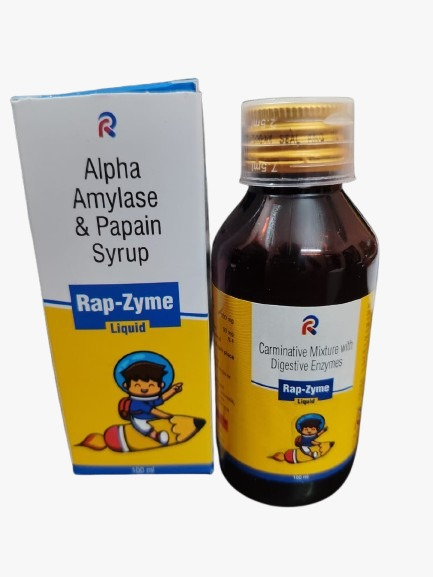

The Rational Combination for Restoring Digestion & Increasing Appetite.
Note for Infants: This medication is also available in Drops form specifically formulated for babies. View Rap-Zyme Drops →
Alpha-Amylase 100mg + Papain 50mg
• Indigestion
• Flatulence
• GI Function Disturbances
• Loss of Appetite
• Anorexia
• Prevention of Malabsorption
A natural pro-digestive enzyme used to treat disturbances in GI function and ensure the prevention of food malabsorption.
A proteolytic enzyme that actively breaks down complex proteins and peptides into smaller molecules for easier digestion.
Rap-Zyme Syrup provides a comprehensive solution for patients struggling with digestive efficiency. By combining the carbohydrate-breaking power of Alpha-Amylase with the protein-cleaving ability of Papain, it restores natural digestion, prevents nutritional deficiencies due to malabsorption, and restores a healthy appetite.